Advanced Topics of OGA
Character Movement Replication
问题
从玩家 2 的角度看，玩家 1 的动作非常不流畅并落后于玩家 1 的实际位置。
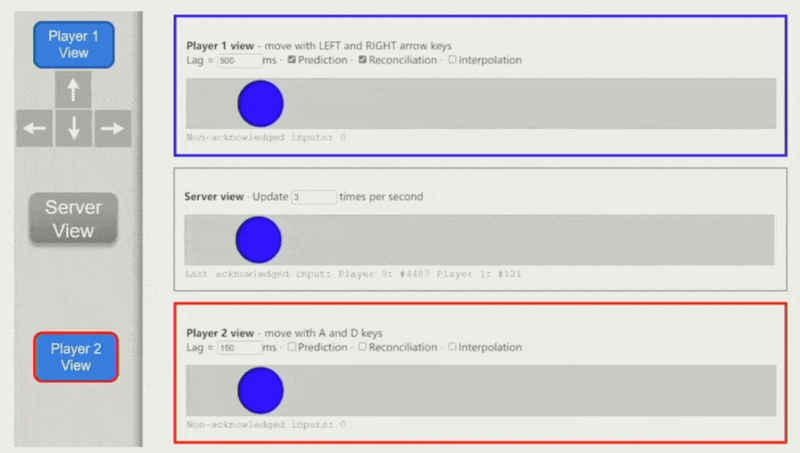
为了让玩家在屏幕中的移动看上去更加丝滑，常用的解决方案有：
- 插值(interpolation)：基于过去且已知的状态计算状态
- 外推(extrapolation)：预测实体从旧状态出发后怎么走

Interpolation
可以在最近接收到的两个数据之间对位置(position)和方向(orientation)进行插值。
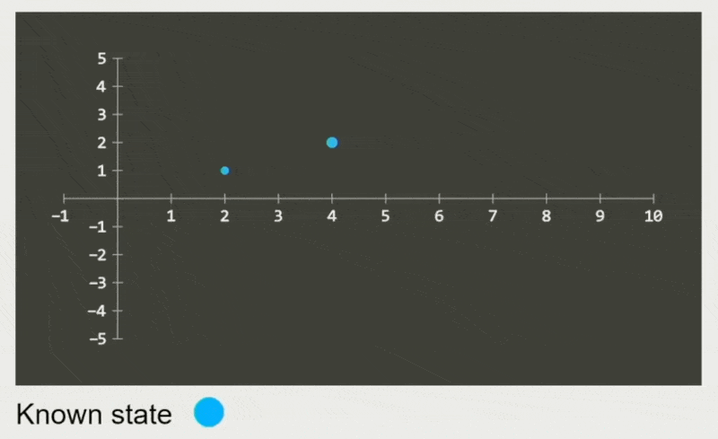
由于客户端与服务端之间传输数据需要一定时间，所以插值操作往往不会立马完成。这时就需要缓存状态(buffer states)，以实现延迟渲染(deferred rendering)。
- 接收数据包后不会立即进行渲染，而是将其存入内存并等待新的数据包
- 经过一段时间的偏移等待后，开始渲染首个接收到的数据包
- 插值偏移量是人造的一种延迟

效果

插值在载具移动复现时的挑战

如上图所示，由于插值被延迟了，所以很难处理这种情况。
- 将红车对应到授权客户端，它认为自己会撞到灰车上
- 然而，以灰车为授权客户端的话，它由于向上开走了，所以从它的视角看，它不会和红车相撞
Extrapolation
为应对上述挑战，我们引入外推的方法。它的思路是利用过去状态来估计（预测）当前状态，以补偿网络延迟。

实现上借鉴了航位推测法(dead reckoning)的思想。抽象来说是根据已接收的状态来估计未来的状态。以航空为例，在没有 GPS 的年代，飞行员需根据已知的风向、风速等信息来修正飞机的方向和速度。
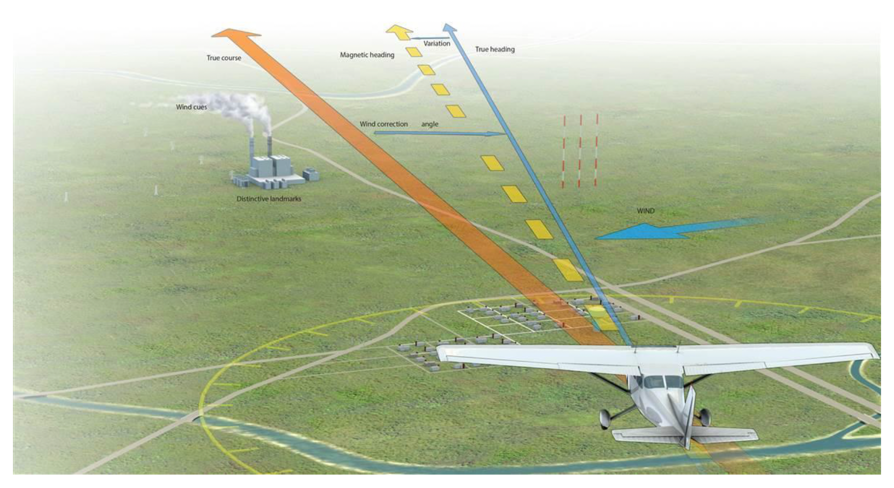

更具体地，我们采用名为投影速度混合(projective velocity blending)的算法。
- 在 \(t_0\) 时刻，复现角色位于 \(p_0\)，速度和加速度分别为 \(v_0, a_0\)，并且接收到位置 \(p_0'\)，速度 \(v_0'\) 和加速度 \(a_0'\) 的同步状态
- 基于同步状态，我们能预测经过时间 \(t\) 后的位置 \(p_t' = p_0' + v_0' t + \dfrac{1}{2}a_0't^2\)
- 我们的目标是在固定的混合时间 \(t_B - t_0\) 后，能够平滑抵达 \(p_t'|_{t=t_B}\)

-
在任意时刻 \(t\)，我们可以得到混合速度 \(v_t\)
\[ \begin{aligned} \lambda & = \dfrac{t - t_0}{t_B - t_0} \\ v_t & = v_0 + \lambda (v_0' - v_0) \end{aligned} \]以及从 \(p_0\) 投影到的位置 \(p_t = p_0' + v_0 t + \dfrac{1}{2}a_0 t^2\)
-
然后结合 \(p_t, p_t'\) 得到推算(dead reckoned)位置 \(p_d = p_t + \lambda (p_t' - p_t)\)
碰撞问题
航位推测得到的碰撞轨迹看起来很奇怪（两辆车碰撞时车头互相穿模了 + 碰撞效果不符实际）。因为上述算法并没有考虑到动力学原理，插值看起来很生硬。

开始碰撞。

复制品（复制客户端看到的车辆）继续前进，因为外推是基于最新快照进行的。
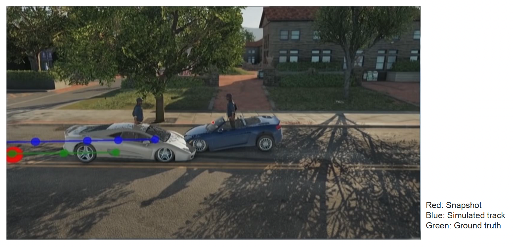
最终（复制客户端）收到一个快照使复制品停止，但复制品已经给主控车辆的刚体施加了巨大速度，将其推开。
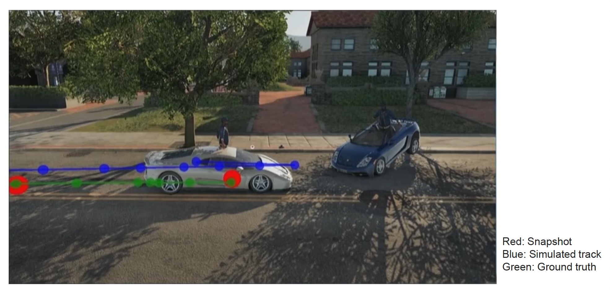
所以要在碰撞过程中加入物理模拟的混合，即在客户端物理模拟计算出的状态，和试图接近推算位置的状态这两种状态之间调整。当发生碰撞时，把位置同步的控制权从外推算法交给物理引擎算法，过一段时间后再换回来。
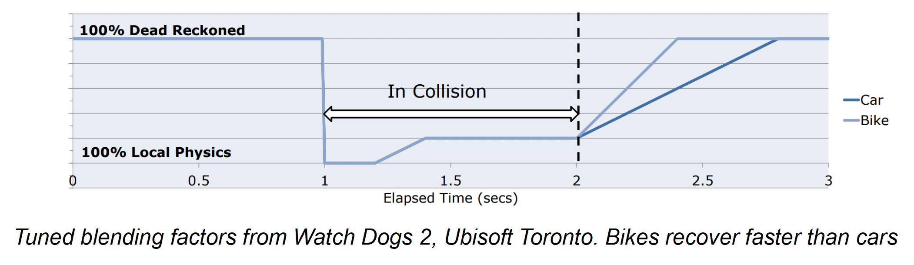
Applications
使用插值的场景：
- 角色移动具有高度不确定性，加速度变化显著
- 当外推误差出现时，游戏玩法会受到画面突变（"wrap"）的影响
- 典型例子：FPS，MOBA
使用外推的场景：
- 玩家移动时采用真实的物理模型
- 网络传输延迟影响到了游戏玩法
- 典型例子：竞速游戏、载具系统（坦克、轮船等）
有时，我们需要同时应用插值和外推来确保游戏的正常运行。
- 对载具应用外推法
- 对角色使用插值法
- 若接收数据不足时则进行外推处理
Hit Registration
要想实现网络射击类游戏中的爆头(headshot)可比我们中要复杂，因为网络消息从客户端传输到服务器需要一段时间，而且插值时还需要缓存一下，因此导致我们看到的敌人位置会有些滞后。

既然由于延迟、插值偏移和时间差，看到其他玩家的位置会略微落后于他们在服务器上的实际位置，那么该朝哪里射击呢？
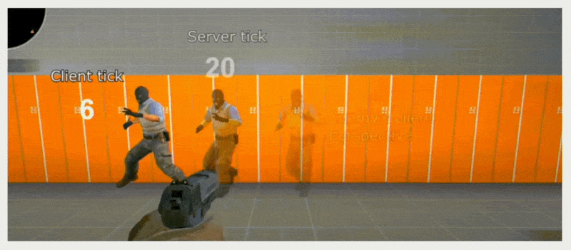
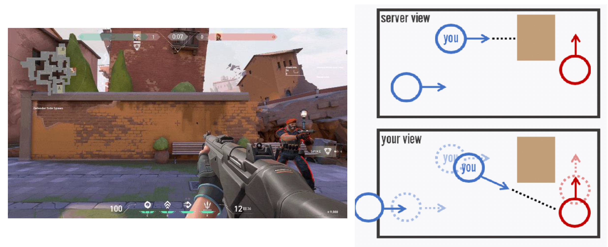
这里便引入了命中判定(hit registration)的概念，即让所有玩家（客户端）达成共识，确认是否确实击中了敌人。这一问题有两类处理办法，一类是由客户端处理的命中检测(hit detection)，另一类是由服务器处理的命中判定。
Client-Side Hit Detection
客户端这边的方案是：
- 由客户端根据复制角色位置来检测命中事件
- 然后将命中事件发送至服务器，由服务器执行简单验证
例子
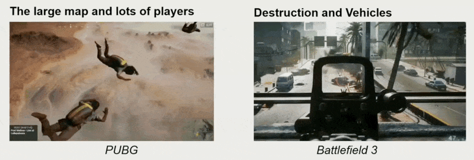
射击类游戏的不同弹道效果：不同于扫射类武器(hitscan weapons)（射速无限快，相当于射出一道激光），投掷类武器(projectile weapons)还能模拟出重力效果（弹道为抛物线）。

再来看服务器端是怎么验证的。客户端向服务器发送包含完整射线信息的命中事件，包括射线的起始点、命中点和命中对象。
- 验证起始点是否确实足够接近射击者位置
- 验证命中点是否真实属于该命中对象
- 通过从起始点到命中点投射射线，确保路径上没有任何障碍物
这里只是简化的处理。在实际的游戏中，这一验证其实是非常棘手且复杂的。
例子
《守望先锋》的做法是：服务器靠「猜」来验证的。只要命中图中红色方框部分，就算玩家命中面前用黄色圆圈圈出来的敌人，看起来十分反直觉。

优点
- 命中检测效率极高，无需庞大的服务器负载
- 提供像素级精度的最佳射击体验
问题
有作弊风险：
- 虚假的命中事件消息
- 延迟开关
- 无限弹药
- ...
Server-Side Hit Registration
第二种方法是让服务器检测是否命中。但这就带来另一个问题：由于客户端不知道目标在服务器（准确的）当前位置，当目标的客户端已经移动好了，服务器才知道目标已经开始动了，所以玩家看到的画面会慢一拍。

这个问题的解决办法叫做延迟补偿(lag compensation)，即服务器端通过状态回滚来补偿玩家指令执行时的网络延迟。具体做法为：
- 从客户端中获取信息
- 在缓存的状态快照中回滚(rewind)游戏状态，使其与客户端的行动时间匹配
- 在回滚后的游戏状态下运行客户端操作

回滚时间 = 当前服务器时间 - 数据包时延 - 客户端插值偏移量
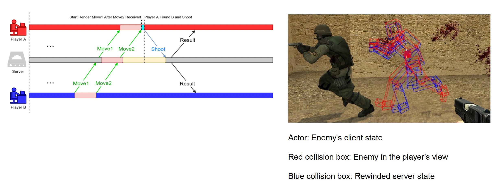
掩体问题(cover problem)
-
进入掩体 -> 对射击者(shooter)有利

-
离开掩体 -> 对窥看者(peeker)有利
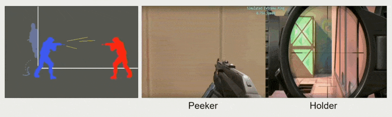
为了减小让网络延迟对命中判定的影响，有以下 hack 手段：
-
加入前摇(startup frame)：
- 攻击或移动前的固定动画也能消除网络传输延迟带来的影响
- 玩家会将注意力集中在动画上，从而忽略状态延迟
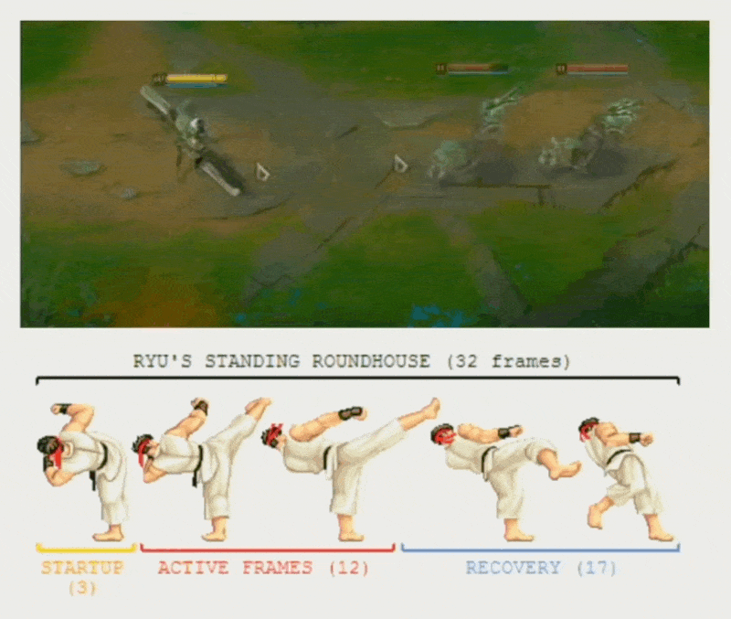
-
本地预测视觉特效（VFX）影响
- 客户端可执行本地命中检测，为玩家提供即时反馈，例如显示血液飞溅的视觉效果
- 然而，命中的任何持久性效果（如减少玩家的生命值）需在收到服务器确认后方可应用
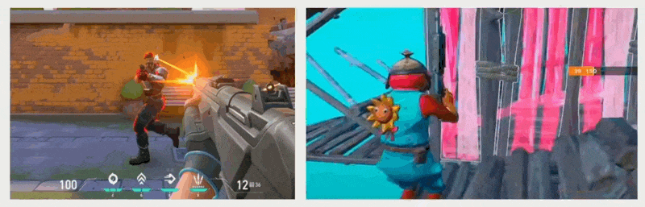
MMOG Network Architecture
MMOG（大型多人在线游戏(massively multiplayer online game)，通常简称为 MMO）允许大量玩家（通常是数百甚至数千人）在同一服务器上进行大规模的合作与竞争，并涵盖多种玩法类型（如 MMORPG（大型多人在线角色扮演游戏）、MMORTS（即时战略类网游）、MMOFPS（第一人称射击类网游）等）。
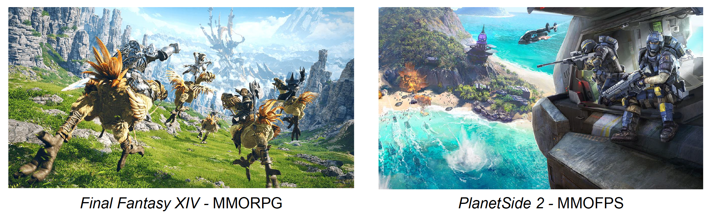
例子
-
第一款网络游戏：Mazewar（1974）
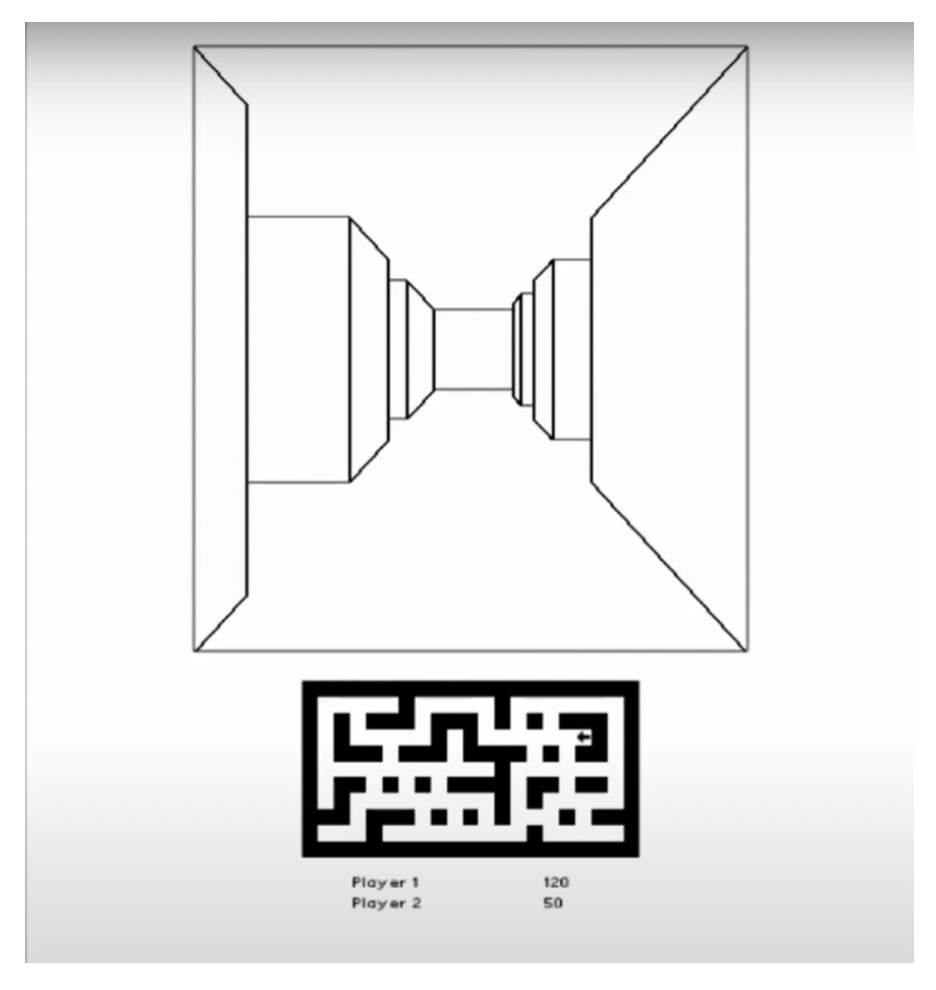
-
第一款角色扮演游戏：Multi-User Dimension（1978）

-
现代 MMO 的多元性：
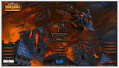
可以看到，MMO 游戏玩法多样，因此需要众多子系统的支持，包括：
- 用户管理
- 匹配系统
- 交易系统
- 社交系统
- 数据存储
- ...
这些系统通过类似下面这样（简化过）的架构被组织起来：

可以看到，架构从上到下由玩家、链接层、业务层和数据层这四层构成。下面就来详细介绍除玩家之外的层级。
Link Layer
链接层包含以下服务：
-
登录服务器(login server)：客户端连接验证
- HTTPS 协议
- 一般通过账号密码登录
-
网关(gateway)：用于隔离内外网
- 用户只能直接跟网关沟通，网关再去和内部服务器沟通
- 类似防火墙，可以验证用户发送消息的合法性，并有一定的拦截功能
- 一般会开启多个网关
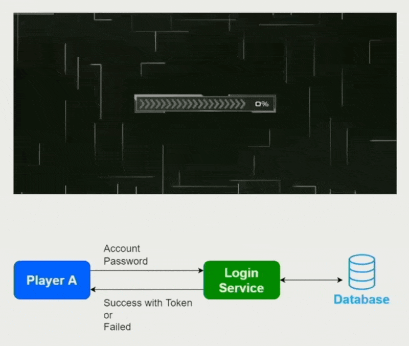
Business Layer
业务层包含以下服务：
-
大厅(lobby)
- 玩家可以聚集在大厅，查看并与其他玩家互动
- 玩家数量的持续增加对服务器和客户端的性能构成了挑战
- 可作为其他子系统的缓冲区，比如匹配系统的等待匹配
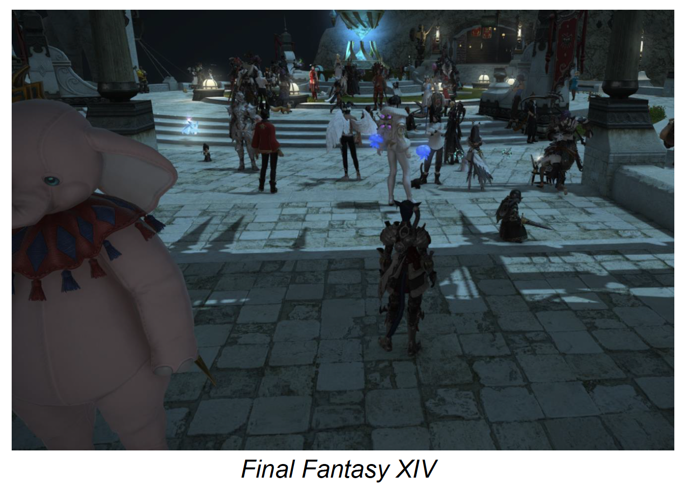
-
角色服务器：所有玩家数据均在一个系统中管理（因为用户数据往往很多，若分散在不同服务器，查询角色信息就会很麻烦），例如账户信息、角色信息、背包信息和邮件信息等

-
交易系统
- 在市场上买卖物品
- 通过游戏内邮件向其他玩家发送物品或金币
- 游戏设计师需要密切关注市场价格，以防失衡
- 为了让持久世界保持稳定的经济体系，必须在货币来源与消耗之间找到平衡点
- 玩家可以使用现实世界的金钱购买特定的游戏内物品
- 对安全要求非常高，需具备回滚功能，从而让服务器在崩溃后能够恢复原来的数据
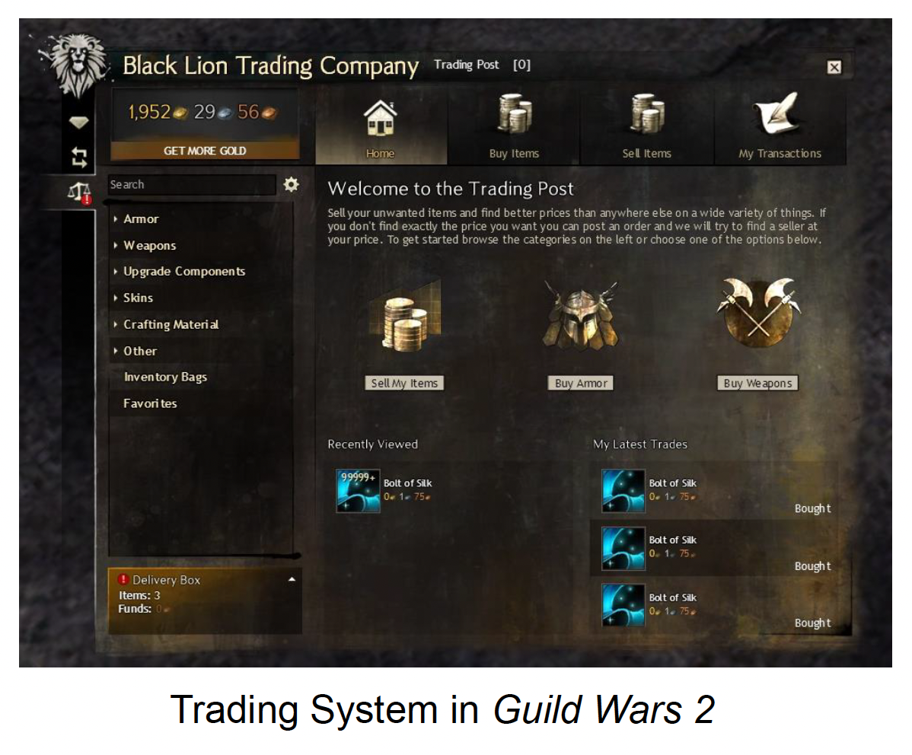
-
社交系统
- 玩家间的互动与交流
- 增强游戏内的社会凝聚力
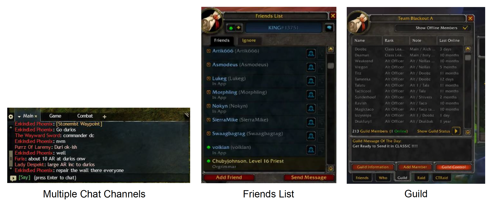
-
匹配系统
- 必须考虑技能、等级、延迟、等待时间等属性
- 通常打造一个优秀的匹配服务是游戏设计的核心
- 在全球范围内为玩家群体运行这项服务，会带来一系列全新的挑战

Data Storage
最后考虑数据存储问题。游戏数据非常复杂且多样化，包括：
- 玩家数据（公会、地下城、仓库等）
- 监控数据
- 采矿数据
这些数据需要能被安全持久化，并且被高效组织起来，以便检索和分析等。而这样的工作往往由专门的数据库系统完成，下面介绍几类常见的数据库：
-
关系型数据存储(relational data storage)
-
特点：
- 需要预先确定结构
- 灵活的查询方式
- 始终保持一致
-
用途：
- 玩家数据
- 游戏数据
- 库存系统
- 物品商店/交易系统
- ...
-
代表：MySQL 等
-
-
非关系型数据存储(non-relational data storage)
-
特点：
- 结构可随条目变化
- 查询具有更高特异性(specificity)
- 可能并不总保持一致
-
用途：
- 玩家/物品属性/档案游戏数据
- 附魔与升级系统
- 游戏状态管理
- 任务数据
-
代表：mongoDB 等
-
-
内存数据存储(in-memory data storage)
-
特点：
- 极速性能（内存对比硬盘）
- 键值存储
- 快速排序/范围搜索
- 服务器间持久化
-
用途：
- 匹配系统
- 排行榜功能
- 会话管理
- 提升其他数据库性能
-
代表：redis 等
-
就算现在数据库做的再好，也得考虑一个现实：网络游戏的玩家数量不断增长，对服务器提出了更高的要求。

为了应对巨大的玩家数量，常用的解决方案是分布式系统(distributed system)，它是一种各组件分布在网络上的多台计算机（或其他计算设备）中的计算环境。
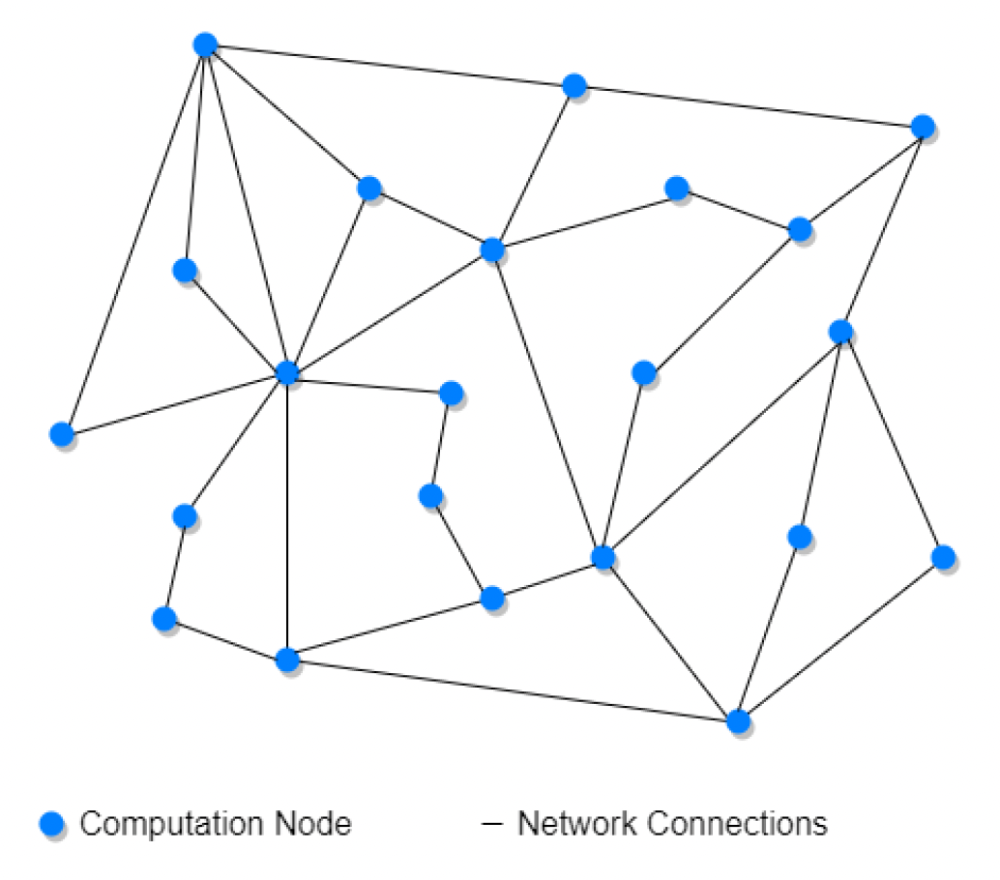
分布式系统的挑战
- 数据访问互斥(data access mutual exclusion)
- 幂等性(idempotence)：同一个操作无论被执行多少次，其结果都与执行一次时所产生的影响相同
- 故障与部分故障
- 不可靠网络
- 病毒般传播(spread epidemically)的分布式错误：一个小 bug 在系统里来回振荡并放大，传播给系统中的其他服务
- 一致性与共识机制(consistency and consensus)
- 分布式事务(distributed transaction)
为了应对上述挑战，分布式系统中常用到以下技术：
-
负载均衡(load balance)：将一组任务分配到一组资源（计算单元）上的过程，目的是使整体处理更加高效
- 优化响应时间
- 避免某些计算节点过载而其他计算节点闲置的不均衡情况
- 所有参与者被均匀分布在多个服务器上
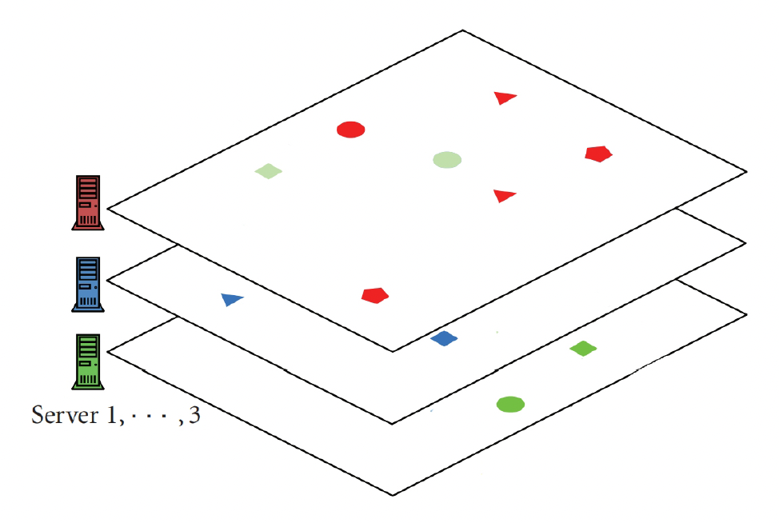
-
实现负载均衡的一种算法叫做一致性哈希(consistent hashing)，旨在解决集群中增加或移除服务器时需重新分配所有玩家的问题

- 同时为玩家和服务器设置一张环形的哈希表，以 IP 地址作为哈希的输入（因此取值范围为 [0, 232-1]）
- 一个简单的规则：对某个玩家，逆时针寻找最近的可用服务器
- 好处：查询速度快，无需额外的 RPC，减小成本
- 缺点：需要精心设计哈希函数（但很难设计），使玩家和服务器在哈希表的分布尽可能均匀
-
删除某个服务器（S2）：此时需为 P3, P4 重新选择一个服务器

-
增加一些服务器：

-
服务发现
-
服务器管理的挑战：随着玩家数量增多，服务数量增加，服务器的管理会变得更加困难，到了后面就很难灵活更改服务器的 IP 或端口
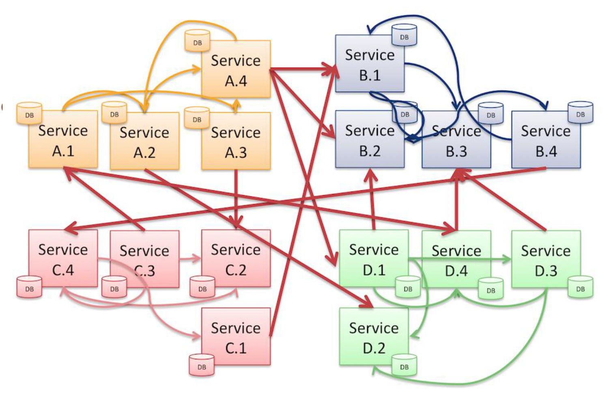
-
流程：
-
注册表(registry)
- 新建服务进入系统时向服务注册中心进行注册
- 一个关于注册值的示例：
server type/server_name@server_ip:port
-
查询(query)和监控(watch)：请求服务(request service)发现服务，从而通过服务类型查询所有值并对其监控
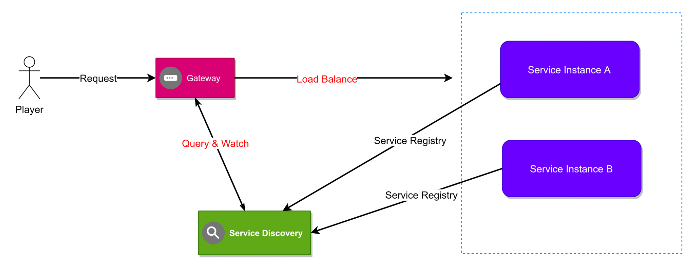
-
健康检查(health check)：当服务器实例 B 心跳超时时，网关服务器 B 通知故障

-
-
应用：Apache ZooKeeper, etcd
-
Bandwidth Optimization
为什么带宽很重要？
- 很多服务按带宽的使用量计费，比如移动通信、云服务等
- 带宽增加可能会导致延迟，出现数据包分割或丢包
- 消息溢出会引发连接中断
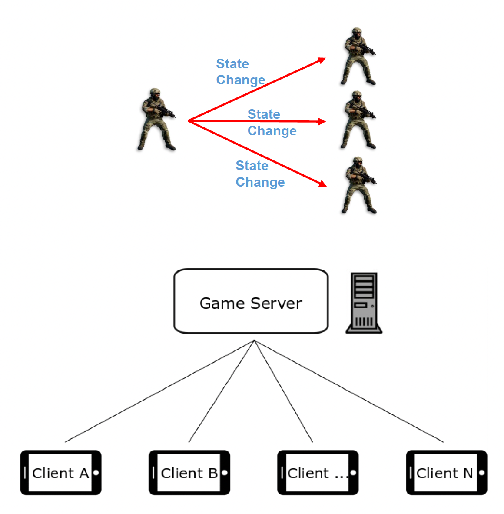
来看带宽(bandwidth)是如何计算的。
-
影响因子(affecting factors)
- \(n\)：玩家数量
- \(f\)：更新频率
- \(s\)：游戏状态大小
-
每秒数据传输
- 服务器：\(O(n \cdot s \cdot f)\)
- 客户端（下游）：\(O(s \cdot f)\)
- 客户端（上游）：\(O(f)\)
Data Compression
第一种优化带宽的方法是数据压缩。
-
游戏同步数据中包含大量浮点数，如位置、旋转、速度等，选择合适的浮点精度可显著节省带宽

-
例如在表示人物奔跑速度时，仅需半精度即可满足需求
-
在表示玩家位置时，由于玩家速度限制，其移动范围将限定在一定区域内
- 我们可以将地图划分为不同的小块，并利用相对位置来表示玩家的具体坐标，这有助于降低同步位置所需的浮点数精度
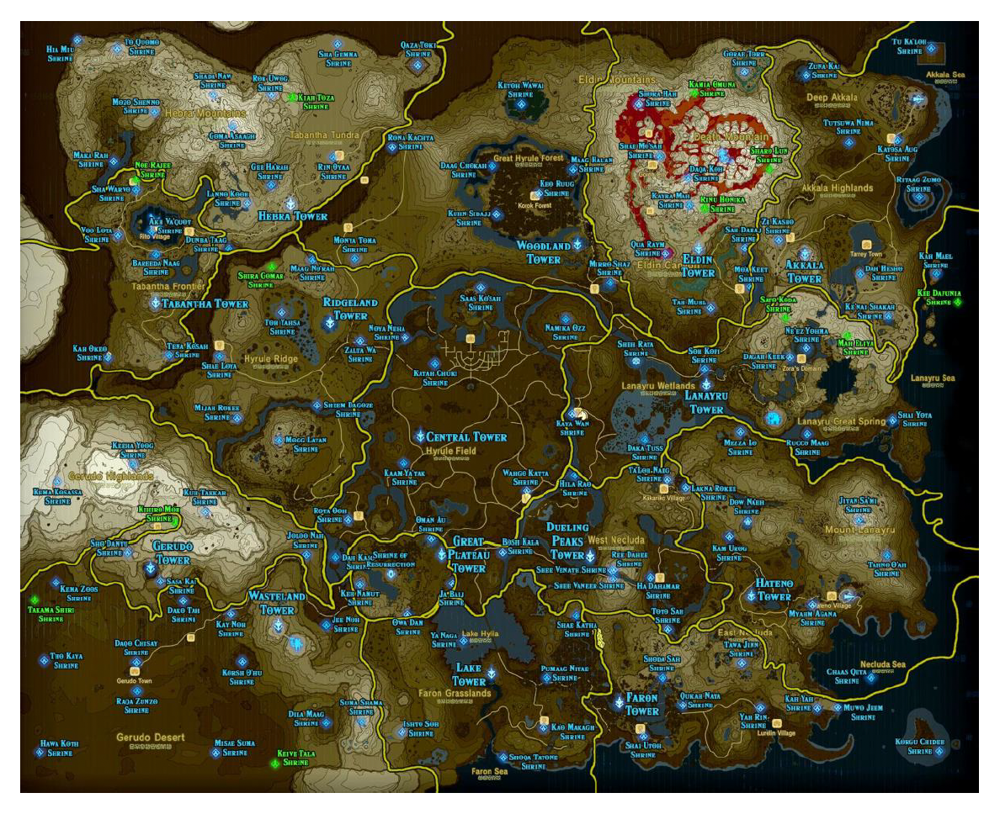
Object Relevance
相关对象(object in relevance)通常指玩家可见并可互动的对象。
- 最简单的实现方式是让所有客户端关联所有的对象，但这种方法仅适用于只有少量玩家的情况
- 这是限制最大并发玩家的因素

下面介绍一些实际用到的确定相关性的方法。
Static Zones
第一种方法是将世界划分为多个静态区域(static zones)。
- 玩家将被分配到不同的区域
- 同一区域内玩家是相关的
- 该方法通过屏蔽不必要的状态同步来降低带宽的浪费
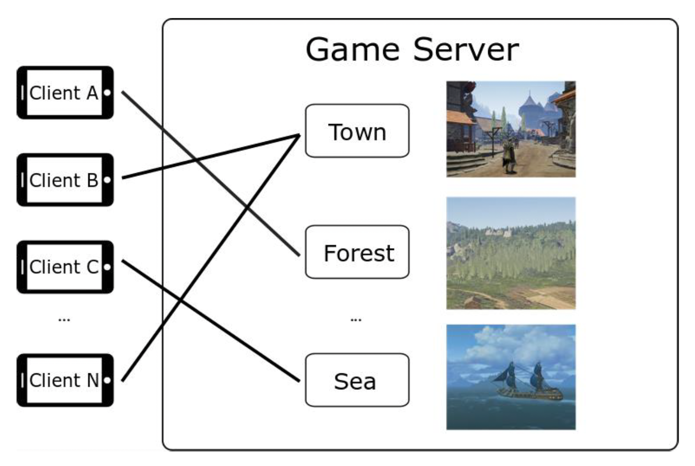
AOI
但采用上述方法就无法构建一个真正的开放世界（各个区域就是一个箱庭）。于是我们引入第二种方法，叫做兴趣区域(area of interest, AOI)
- 它是指与玩家或 NPC 相关的对象的作用范围
- 玩家只能看见并和范围内的物体交互
- 能移除不必要的网络数据
例子

AOI 的具体实现方法有：
-
直接范围查询(direct range query)
\[ \sqrt{(x_{\text{player}} - x_i)^2 - (y_{\text{player}} - y_i)^2} \le r_{\text{AOI}} \]- 时间复杂度：\(O(n^2)\)
- 易于实现
- 但不适用于 MMOG
- 例如一个区域内有 1000 名玩家，每秒 20 次更新：1000 * 1000 * 20 = 每秒 2000 万次距离计算

-
空间网格(spatial grid)
-
映射实体
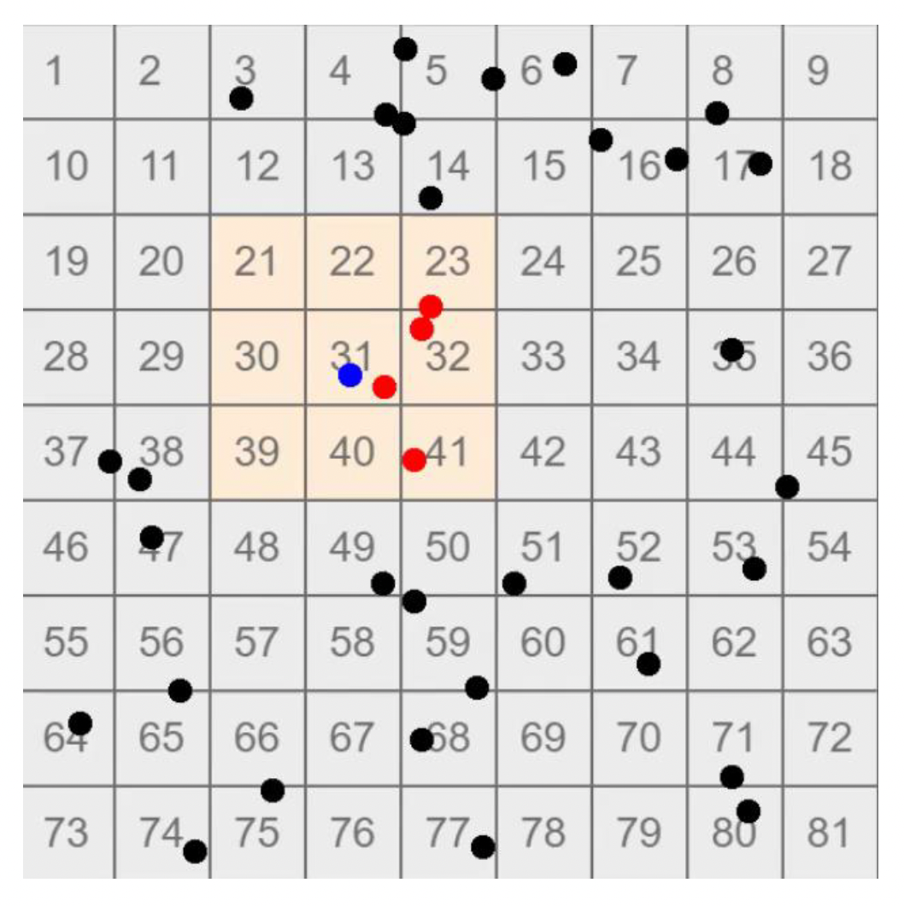
- 将实体 (x, y) 映射到网格 N
- 相关对象便是当前玩家所在网格周围的相关实体
- 玩家的 AOI 列表可被缓存
-
事件

- 进入：向观察列表中添加实体
- 离开：从观察列表中移除实体
-
优点：查询速度快（\(O(1)\)）
- 缺点：
- 小网格：内存成本高
- 大网格：CPU 成本高
- 对象的 AOI 半径可变
-
-
正交链表(orthogonal linked-list)
-
游戏实体位于两个双向链表
xlist,ylist中，按升序排序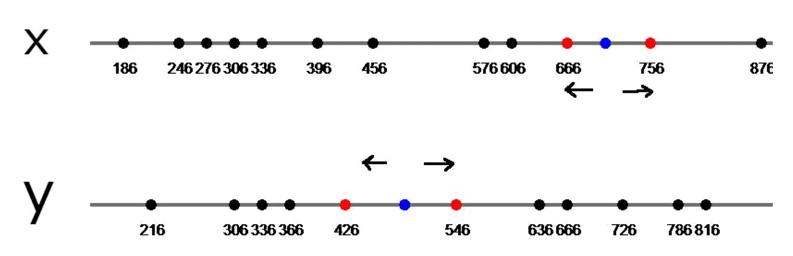
-
遍历更少的对象
-
遍历实体
- 在 AOI 半径范围内
- 可选择左/右方向，x/y 列表
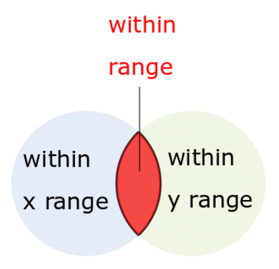
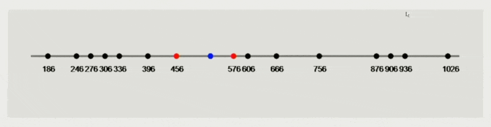
-
更好的方法：范围触发器(range trigger)（图中的两个绿点）
- 实体移动 -> 触发器移动
- 和触发器比较
- 事件驱动

-
优点：
- 内存使用高效
- 支持可变的 AOI 半径
-
缺点：
- 插入新对象的成本为 \(O(n)\)
- 当实体频繁移动很大一段距离时不合适
-
-
潜在可见集(potentially visible set, PVS)：潜在可见区域的集合
- 可离线计算
- 从 PVS 中确定相关对象
- 例子：赛车游戏中的高速行驶的车辆

Varying Update Frequency by Player Position
我们还可以通过调整更新频率来优化带宽。一种自然的做法是基于玩家位置（距离）来改变更新频率，因为离玩家足够近的对象才是可交互的。距离越远，频率越低，从而降低带宽。

Anti-Cheat
作弊(cheating)会对网络游戏产生严重的负面影响。一旦游戏中作弊泛滥，多数玩家很难会坚持玩这款游戏。


五花八门的作弊方式：
-
游戏代码修改
- 读取或修改内存数据
- 破解客户端
-
系统软件调用
- D3D 渲染钩子
- 模拟鼠标和键盘操作
- ...
-
网络数据包拦截
- 发送假数据包
- 修改数据包数据
下面具体阐述其中一些作弊手段及应对措施。
Obfuscating Memory and
比较直接的一种作弊方法是内存混淆：
- 作弊者获取玩家坐标（等敏感数据）在内存中的位置，并绕过游戏规则来移动角色，比如穿墙
- 此外，作弊者可以利用这些值的位置来映射出内存中更大的数据结构，比如玩家对象本身

这一作弊手段的应对方法是可执行文件加壳器：
-
作弊者通过逆向工程还原游戏核心逻辑；具体来说，玩家可通过分析代码、寻找游戏漏洞、制作插件等方式破解游戏
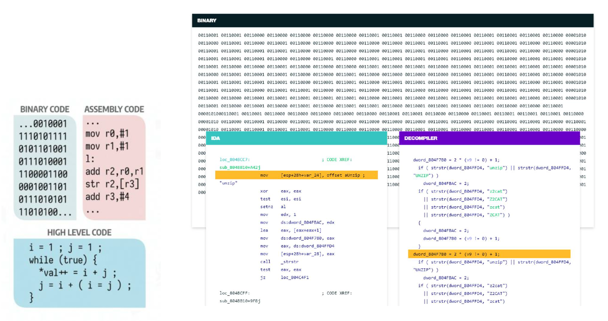
-
文件加壳器的做法：
- 对源程序进行混淆(obfuscate)，并添加解压代码
- 执行解压代码，并在内存中解密源程序

Verifying Local Files by Hashing
第二种作弊方式是修改本地文件资源。例如：
- 将墙壁纹理改为透明，从而透过墙壁看到所有敌人
- 调整光照设置，以便更容易发现敌人
- ...

解决措施是为本地文件计算哈希值，然后将哈希值上传到服务器中验证。若发现哈希值不对，说明本地数据遭到篡改，就会被判作弊。
Packet Interception and Manipulation
第三种作弊方式是数据包的拦截和操纵。
- 当数据未加密或遭黑客攻击时，玩家即便不启动游戏也能基于数据包构建游戏逻辑
- 此类作弊程序常沦为牟利工具，严重削减游戏的总体收益

因此需要对网络流量加密。常见的两类加解密算法有：
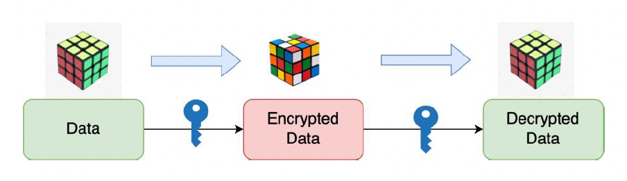
- 对称加密(symmetric encryption)
- 使用相同的密钥来混淆和恢复数据
- 快速且高效
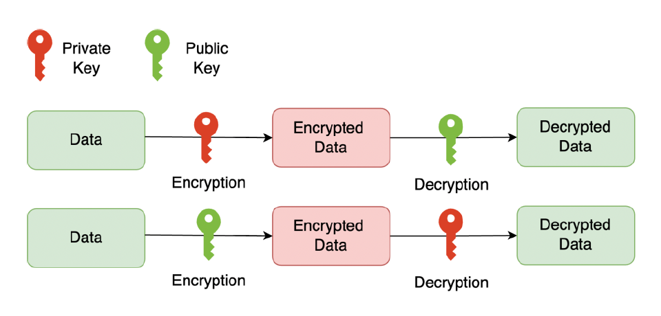
- 非对称加密(asymmetric encryption)
- 加密和解密采用不同密钥
- 速度慢，仅用于加密关键数据
游戏中的实际做法是将两者的优势结合起来：
- 使用非对称加密安全分发对称密钥
- 利用对称加密密钥传输数据

System Software Invoke
第四种作弊方式是系统软件的调用：
- 修改 DirectX 内核，改变渲染函数的执行流程
- 能够强制渲染引擎调整遮挡关系
- 实现透视墙壁来观察敌方移动
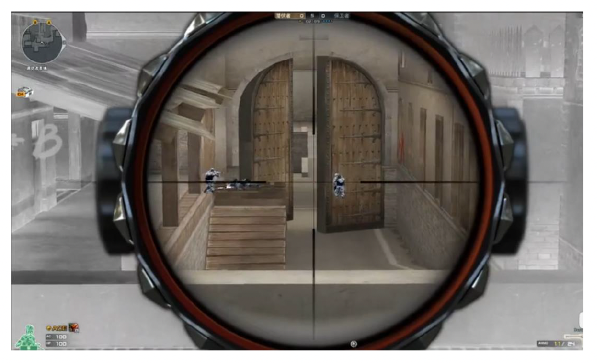
Anti-Cheat Software
典型的反作弊软件包括 Valve 反作弊（VAC）和 Easy 反作弊（EAC）。它们的共同之处是：
- 检测游戏交互过程中因任何文件冲突引发的恶意行为
- 完全阻止作弊玩家启动游戏
- 防止任何非法修改及配置变更，杜绝利用游戏漏洞的行为
AI Cheat
还有一种更新颖且更难对付的作弊手段是 AI 作弊。这类作弊的特点是：
- 全平台支持
- 无需修改代码
- 独立于游戏运行
- 功能：
- 游戏画面捕捉
- 目标检测功能
- 光标移动控制
- 开火操作
- ...
例子
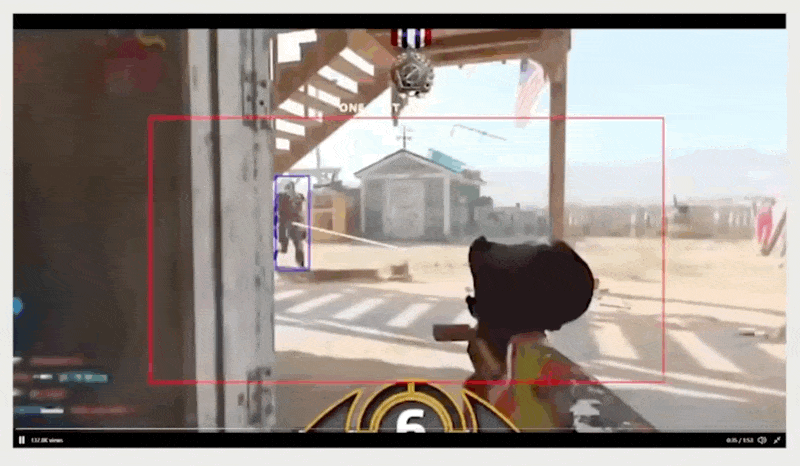
AI 作弊有着丰富的 AI 中间件支持，比如：
- 实时目标检测：YOLO V5、V7...
- 基于骨架的动作识别

应对方法有：
-
CS（反恐精英）提出的监察者模式(overwatch)：
- 该系统基于其他玩家对涉嫌作弊玩家的录像进行审查
- 多位评审员共同查看同一案例，多数意见决定嫌疑人是否作弊
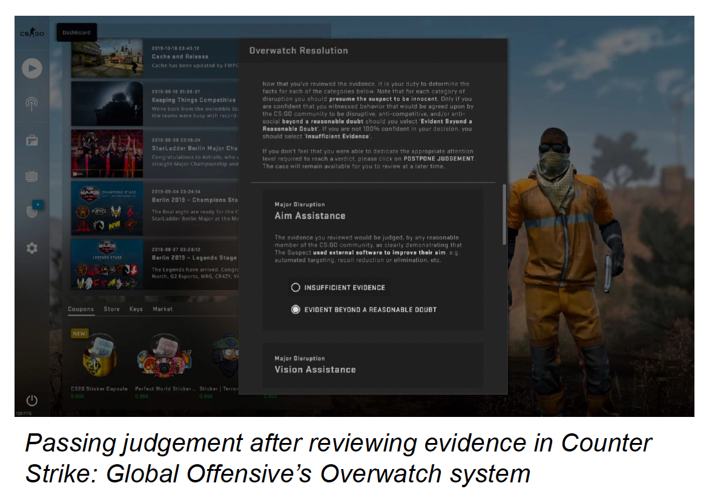
-
基于统计的系统(statistic-based system)
- 收集用户的游戏信息，如胜率和暴击率
- 对比自身历史数据、某些阈值规则或其他玩家的举报来标记玩家
- 手动核查以确认是否存在作弊行为
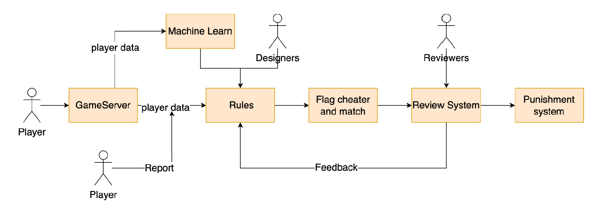
-
检测已知的作弊程序
- 一个合理的反作弊程序应具备扫描用户计算机，基于多种特征识别已知作弊软件的能力
- 最简单的方法是仅涉及比对哈希值或进程名称
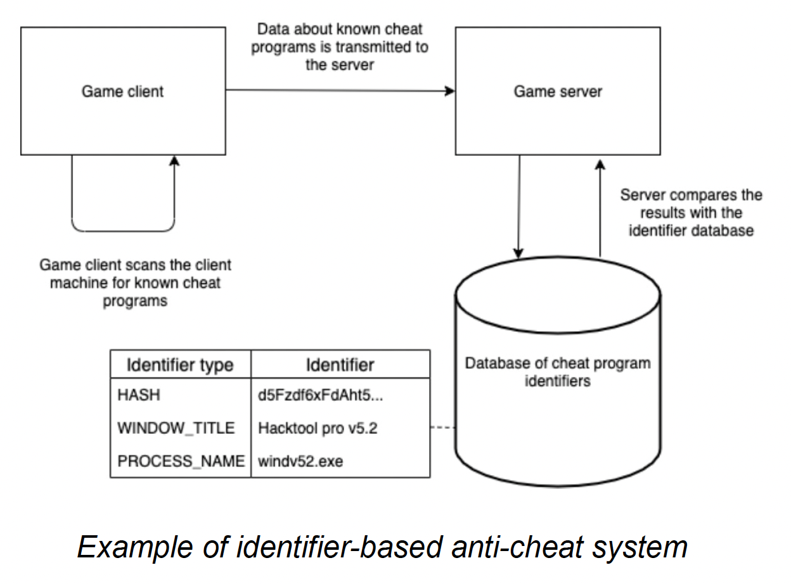
Build a Scalable World
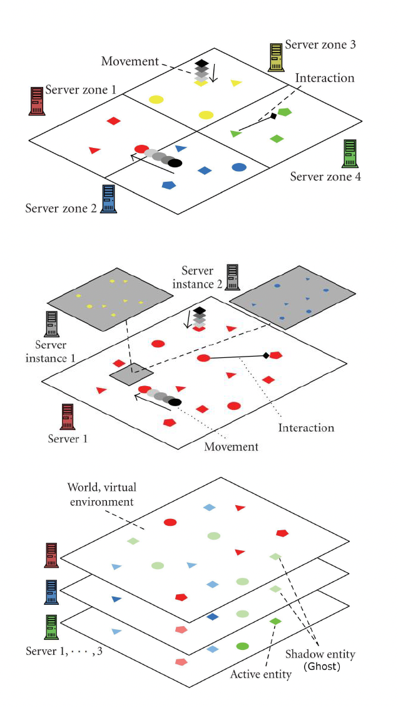
最后一部分来谈一下如何构造一个真正的开放世界。要实现这一目标，服务器应当是可扩展的(scalable)，应当支持以下几种操作：
-
区域划分(zoning)
- 大量玩家分布在广阔的游戏世界中
- 分布可能不均匀
-
实例化(instancing)
- 并行独立运行大量的游戏区域
- 减少拥堵/竞争压力
-
复制(replication)
- 支持高用户密度场景
- 比如高密度的 PVP 对战游戏
Zoning
我们对区域划分的期望是划分出无缝的区域，具体做法如下：
- 玩家们合理分布在一个广阔的世界中
- 客户端仅连接至其中一个负责的服务器
- 玩家跨过边界后，自动将客户端转移至另一台服务器
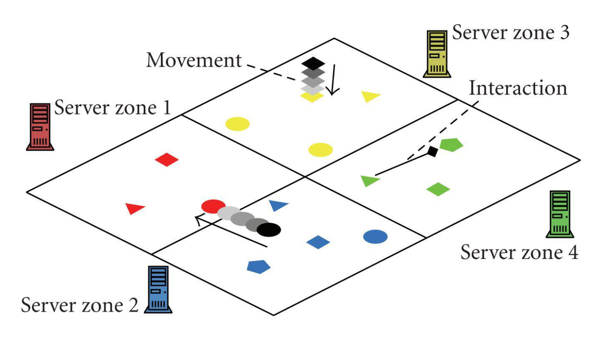
- 为了得到平滑过渡的体验，设定跨越边界的条件为：边界宽度 >= 最大的 AOI 半径
-
还得考虑边界附近的两个实体，虽然它们在不同区域，但也应该能和彼此交互
-
活跃实体(active entity)
- 位于连接的区域服务器中（权威）
- 在其他区域拥有幽灵代理(ghost agent)
- 能够看到另一区域的幽灵实体
-
幽灵实体(ghost entity)
- 也称为影子实体
- 是由另一区域拥有的代理实体
- 从原始实体处接收更新
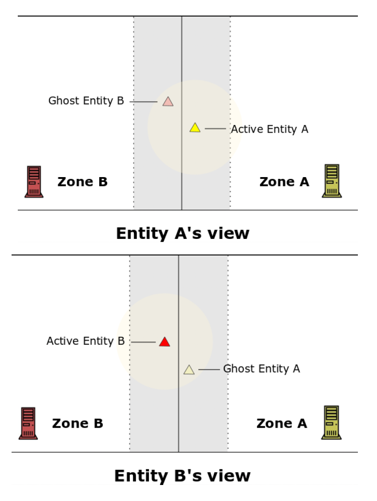
-
-
穿过边界（A -> B）：
- 移动前：区域 A 中的一个活跃实体
- 接近边界 A ：在 A 中活跃；在 B 中为幽灵状态
- 位于边界时：实体已转移至区域 B
- 接近边界 B：在 B 中活跃；在A中为幽灵状态
- 越过边界 B：从区域 A 中移除
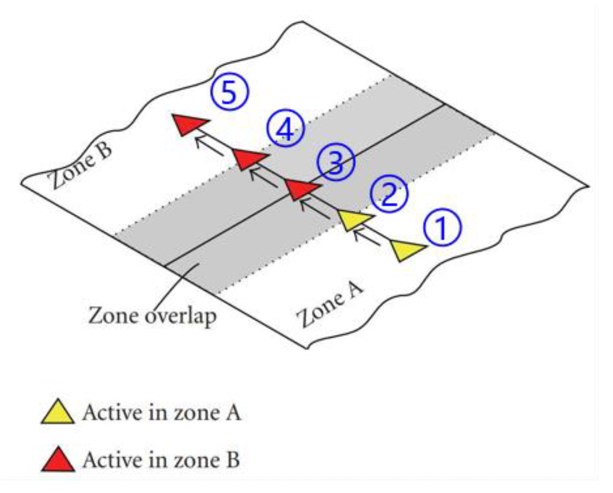
Replication
复制操作的具体处理如下：
- 协同处理同一世界区域
- 在服务器间分配实体更新
- 每台服务器创建自己的活跃实体
- 活跃实体的更新将自动复制到所有其他服务器（作为幽灵实体）

三种技术的结合
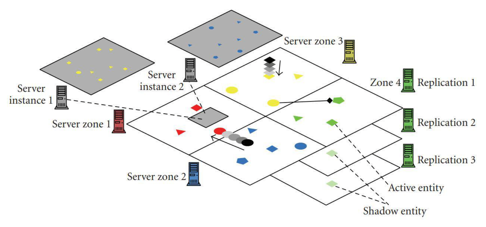
评论区